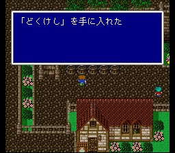
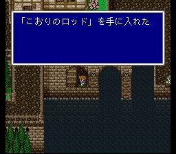
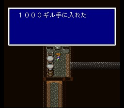

이 마을에는 원래 월스로 가는 배가 있었으나, 바람이 멈추면서 뱃길도
막혀 버린 모양입니다. 사람들과 대화를 하다 보면 비룡이 북의 산으로 날아갔다는
정보가 나옵니다. 다음 목적지가 정해집니다.
자, 그럼 오늘도 마을 싹쓸이에
여념이 없는 우리의 주인공들-

쓸 만한 거라면 얼음의 로드가 나옵니다. 속성이 있는 로드는 그 속성 마법을
강화시켜 주므로 흑마도사에게 유용하게 사용됩니다.
그리고 아이템들도
봅시다.
도구상: 포션, 해독제, 안약, 여인의 키스, 요술방망이, 금바늘, 피닉스의 꼬리깃,
텐트
무기상: 대거, 롱스워드, 로드, 지팡이
방어구상: 브론즈실드, 브론즈헬름,
브론즈아머, 동의 가슴받이, 목면의 로브
마법상: 흑마법 Lv1, 슬리플, 케알,
포이즈나, 사이레스, 프로테스
이 정도까지 왔으면 돈 걱정은 없을테니 마법들은 빠짐없이 구입하시고..
무기와 방어구가 갖고 있는 것들보단 좋은 게 많으니 보강합시다. 그리고 상태 이상이
이제부터 심심찮게 나타날 테니 도구들도 준비하시는게.. 특히 안약, 금바늘은 여유있게
사갑시다. 당장 북의 산에서 소용이 있습니다. 혹시 모르니 해독제도 구비하시고요.
아참, 피아노가 있으니 치고 가세요. 살 거 다 샀으면 북의 산으로..